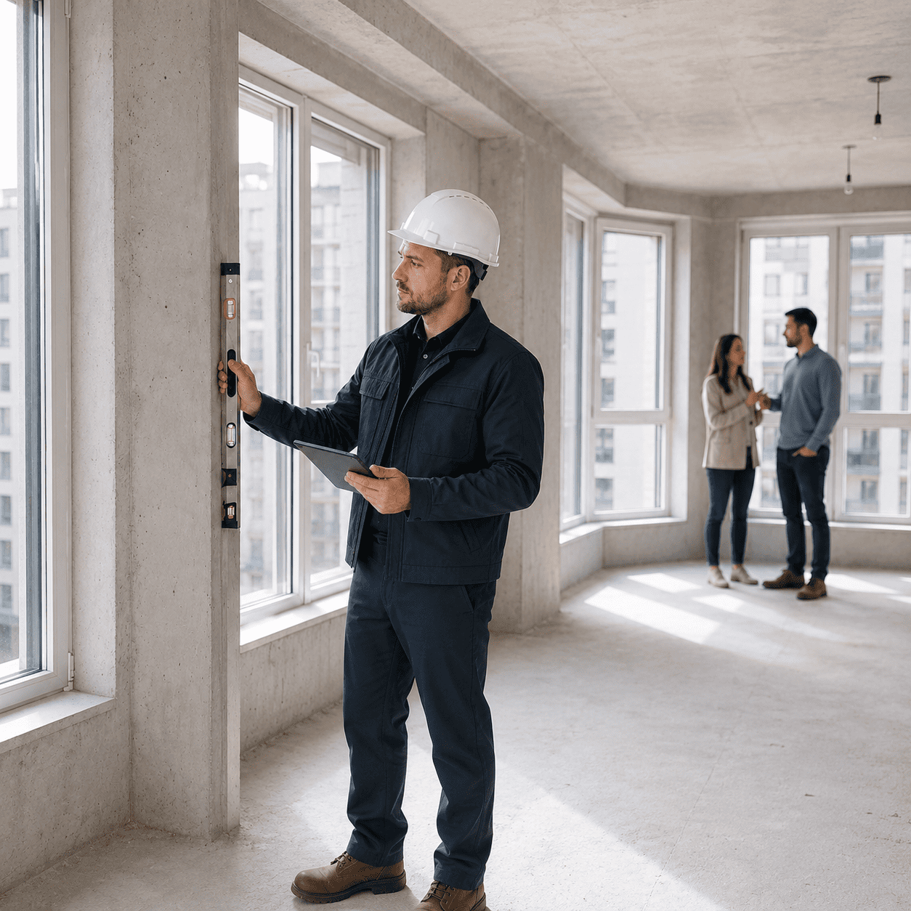

Специалисты НОПРИЗ/НОСТРОЙПроверяем по нормам и практике
Приёмка квартиры в новостройке
Не подписывайте акт, пока квартиру не проверил эксперт
Проверим квартиру перед подписанием акта приёма-передачи, выявим дефекты, нарушения СНиП и ГОСТ и подготовим акт для застройщика.
195 параметров проверкиОкна, инженерия, отделка и скрытые дефекты
Акт для застройщикаЗамечания удобно передать и отработать
500+ проверок в месяцОпыт по ЖК Москвы и МО

Эксперт на объекте
Проверка квартиры перед подписанием акта приёма-передачи.
Что такое приёмка квартиры?
Приёмка квартиры в новостройке — это профессиональная проверка квартиры перед подписанием акта приёма-передачи. Эксперт выявляет строительные дефекты, нарушения СНиП и ГОСТ, составляет дефектную ведомость для предъявления застройщику.
почему нельзя принимать квартиру “на глаз”
Самостоятельная приёмка может стоить дороже, чем проверка эксперта
На приёмке многие дефекты выглядят как мелочи. После подписи акта они превращаются в споры с застройщиком, переделки и расходы уже из бюджета собственника.
Скрытые дефекты остаются за вами
Продувания, промерзания, ошибки монтажа окон и вентиляции сложно увидеть без приборов и опыта.
Акт подписан — спорить сложнее
Если замечание не внесено до подписи, застройщик может отказать, затянуть устранение или переложить проблему на собственника.
Нормативы легко упустить
На глаз сложно понять, где допустимое отклонение, а где нарушение СНиП, ГОСТ или требований к качеству работ.
Слабые формулировки не работают
Недостаточно написать «криво» или «плохо». Нужна техническая фиксация, фото и понятный акт для застройщика.
Приёмка с экспертом — это фиксация фактов, а не конфликт
Специалист проверяет квартиру по чек‑листу, фиксирует нарушения понятным языком и помогает собственнику не принимать решение под давлением.
195 параметровакт для застройщикаплан дальнейших действий
Что входит в приёмку квартиры
Геометрия и размеры
Стены, полы, потолки, проёмы, отклонения и параметры, которые влияют на ремонт и мебель.
Окна и балконные блоки
Продувания, монтаж, створки, стеклопакеты, фурнитура и примыкания.
Электрика и слаботочка
Проверяем розетки, выводы, щиток и видимые ошибки монтажа.
Вентиляция и инженерия
Сантехника, отопление, вентиляция и очевидные риски протечек или неправильной работы систем.
Отделка и поверхности
Качество стен, стяжки, потолков, дверей, плитки и других элементов отделки.
Фотофиксация дефектов
Фиксируем нарушения с привязкой к помещениям, чтобы замечания не потерялись.
Акт осмотра
Собираем замечания в понятный документ для передачи застройщику.
План дальнейших действий
Подскажем, что подписывать, что не подписывать и как добиваться устранения дефектов.
как проходит приёмка
Как проходит приёмка квартиры — 5 шагов
Оставляете заявку
Указываете ЖК, застройщика, площадь, дату и формат приёмки. Менеджер уточняет детали и свободное окно.
5–10 минутПодбираем специалиста
Закрепляем эксперта под вашу дату, тип отделки и особенности застройщика. При необходимости добавляем тепловизор.
до выездаПроверяем квартиру
Эксперт осматривает квартиру по чек-листу: окна, стены, полы, инженерия, отделка, вентиляция и скрытые зоны риска.
60–180 минутФиксируем дефекты
Каждое замечание попадает в акт и альбом осмотра: с фото, помещением, категорией дефекта и ссылкой на норму.
в день осмотраПодсказываем следующий шаг
Объясняем, как передать акт застройщику, что подписывать, когда нужна повторная приёмка или юридическая поддержка.
после приёмкиОпыт по застройщикам и ЖК: знаем, где искать дефекты
500+ проверок в месяц помогают видеть повторяющиеся ошибки застройщиков, быстро ориентироваться в регламентах ЖК и готовить понятные замечания для акта.
500+проверок квартир в месяц
195параметров проверки
1200+отзывов и рекомендаций
Москва и МОвыезд до 50 км от МКАД
Стоимость приёмки квартиры и формат работы
Цена известна до выездаФиксируем стоимость заранее: по площади, типу отделки и дополнительным опциям.
Оплата после осмотраОплачиваете услугу после приемки квартиры и получения акта осмотра от специалиста.
Можно объединиться с соседямиИ получить скидку на приемку квартиры.
Приёмка квартиры
от 5 500 ₽
Проверка квартиры перед подписанием акта, фотофиксация, акт осмотра и рекомендации.
- 195 параметров проверки
- Акт для застройщика
- Памятка после осмотра
Расчёт по площади
130 ₽/м²
Рабочая ставка для расчёта стоимости приёмки. Финальную сетку можно уточнить по метражу.
- Подходит для квартир разной площади
- Удобно для калькулятора
Тепловизионный осмотр
от 1 500 ₽
Дополнительная проверка продуваний, промерзаний, теплопотерь и зон риска.
- Особенно актуально зимой
- Для угловых квартир и больших окон
Дистанционная приёмка
от 5 000 ₽
Когда собственник не может приехать: осмотр, фиксация, документы и отчётность удалённо.
- Фото/видеоотчёт
- Согласование действий с клиентом
Ваша ситуация на приёмке
Получили приглашение
Подберём специалиста под дату и ЖК, объясним порядок действий до осмотра.
Забронировать специалиста →Приёмка через 2–3 дня
Быстро проверим свободные окна и дадим список подготовки к осмотру.
Проверить свободное окно →Застройщик торопит
Специалист спокойно фиксирует факты и помогает не подписать лишнее.
Получить поддержку →Нужна повторная приёмка
Проверим, действительно ли устранили замечания, а не скрыли их косметически.
Записаться повторно →Отчёты по приёмке
Отчёт №1ПИК
ЖК «Бунинские луга»
Проверка квартиры перед подписанием акта: окна, вентиляция, геометрия, отделка и инженерные зоны.
Смотреть отчётОтчёт №2Самолёт
ЖК «Остафьево»
Зафиксированы замечания по окнам, поверхностям, электрике и качеству отделочных работ.
Смотреть отчётОтчёт №3А101
ЖК «Испанские кварталы»
Осмотр с подробной фотофиксацией и актом для передачи замечаний застройщику.
Смотреть отчётОтзывы клиентов после приёмки квартиры
★★★★★
Приёмка у ПИК
“Эксперт нашёл дефекты, которые сами бы точно не заметили. Всё оформили в акт, застройщик принял замечания.”
Оригинал отзыва →★★★★★
Срочная приёмка
“Нужно было успеть за два дня. Менеджер быстро подобрал специалиста, на объекте всё объяснили спокойно.”
Все отзывы →★★★★★
Повторная проверка
“На повторной приёмке оказалось, что часть замечаний устранена не полностью. Сэкономили время и нервы.”
Смотреть отзывы →кто будет на вашей стороне
Кто будет принимать вашу квартиру
На приёмку приезжает строительный эксперт, который фиксирует не “впечатления”, а факты: дефект, норму, фото, рекомендацию и понятную формулировку для застройщика.
Строительный эксперт · НОСТРОЙ
Даушев Вадим Аслямович
Эксперт с 2021 года. Специалист по проведению энергетических обследований.
692приёмки квартир
292строительные экспертизы
Инженер ПГС · НОСТРОЙ
Политов Владимир Ильич
Строительный эксперт, инженер промышленного и гражданского строительства.
983приёмки квартир
397строительные экспертизы
Строительный эксперт · НОСТРОЙ
Васильев Андрей Владимирович
Специалист по проведению энергетических обследований и фиксации дефектов.
703приёмки квартир
368строительные экспертизы
Хотите заранее понимать, кто приедет на объект?На странице специалистов можно показать фото, документы, специализацию, опыт и примеры работ каждого эксперта.
Познакомиться со специалистами
результат после осмотра
Что вы получите после приёмки квартиры
После осмотра у вас остаётся не “устный список замечаний”, а комплект документов: акт для застройщика, альбом с фотофиксацией, адаптированный акт осмотра по форме застройщика и приложения, подтверждающие квалификацию специалиста и поверку оборудования.
PDFАкт осмотрадля
передачи застройщику
- помещения и дефекты
- ссылки на ГОСТ/СНиП
- данные специалиста
ФотоАльбом осмотрафотофиксация
замечаний
- фото дефектов
- подписи под фото
- PDF формат
Онлайн-форматАкт осмотраудобный
перенос замечаний
- разделы застройщика
- копирование текста
- по помещениям
примеры документов
Пример акта осмотра
Акт осмотра
Для передачи застройщику на устранение дефектов.
- Ссылки на ГОСТ/СНиП
- Помещения и категории дефектов
- Документы специалиста и оборудования
Альбом осмотра
Фотофиксация замечаний, чтобы не потерять ни один дефект.
- Фото дефектов
- Подписи под каждым фото
- PDF формат
Акт осмотра по форме застройщика
Адаптированный акт для удобной работы с замечаниями.
- Лёгкий перенос замечаний в приложение застройщика
- Можно копировать одним нажатием
- Разбивка на разделы, как у застройщика
Приложения и обмер
Подтверждают квалификацию и фиксируют дополнительные данные.
- Дипломы, удостоверения, реестры
- Поверки и сертификаты на оборудование
- Информационная проверка площади объекта
после осмотра
Нашли дефекты — что дальше?
Передаёте акт застройщику
Замечания оформлены по помещениям, с фотофиксацией и ссылками на нормы. Такой документ проще передать в отдел качества или через личный кабинет.
первый шагЗастройщик устраняет замечания
Часть дефектов устраняют быстро, часть требует контроля. Акт помогает не спорить “на словах”, а возвращаться к конкретным пунктам.
контроль сроковПроводим повторную приёмку
Проверяем, действительно ли замечания устранены, не появились ли новые дефекты и можно ли безопасно двигаться к подписанию документов.
повторная проверкаПри споре подключаем юристов
Если застройщик не согласен с замечаниями или затягивает устранение, материалы осмотра становятся базой для претензии и юридической защиты.
защита интересовгеография выездов
Выезд на приёмку до 50 км от МКАД
Работаем в Москве, Новой Москве и крупных городах Московской области. Выезжаем на приёмку квартир в новостройках, где идут массовые выдачи ключей, повторные осмотры и устранение замечаний.
Принимаем квартиры в Москве и Московской области
Если ваш ЖК находится в пределах зоны выезда, специалист приедет на объект с оборудованием, проведёт осмотр, подготовит акт и подскажет дальнейшие действия.
- Москва и Новая Москва
- Московская область до 50 км от МКАД
- Выезды в будни и выходные по записи
- Работа с массовыми застройщиками и ЖК
Популярные города и направления
Подробно о приёмке квартиры в новостройке
Экспертный блок для тех, кто хочет разобраться глубже: что проверяет специалист, зачем нужен акт, какие дефекты встречаются чаще всего и как проходит приёмка в Москве и МО.
Что такое приёмка квартиры от застройщика?
Приёмка квартиры — это проверка объекта перед подписанием акта приёма‑передачи. На этом этапе важно не просто “посмотреть квартиру”, а зафиксировать строительные дефекты, нарушения норм, недочёты отделки, инженерии, окон, дверей и вентиляции.
Если замечания правильно описаны в акте и подтверждены фотофиксацией, застройщику проще передать конкретный список работ на устранение. Если подписать акт без проверки, часть проблем может перейти в ремонт уже за счёт собственника.
Почему самостоятельная приёмка — рискованное решение?
Собственник чаще замечает только очевидные дефекты: царапины, сколы, пятна, перекосы дверей. Но дорогие проблемы часто скрываются глубже: продувания окон, промерзания, отклонения геометрии, ошибки вентиляции, электрики, сантехники и стяжки.
- без приборов сложно увидеть скрытые зоны риска;
- без опыта трудно отличить допустимое отклонение от дефекта;
- без правильных формулировок замечания могут “потеряться” у застройщика;
- после подписи акта спорить обычно сложнее.
Что проверяет эксперт на приёмке квартиры?
Специалист проверяет квартиру по чек‑листу: окна, балконные блоки, стены, полы, потолки, геометрию помещений, входную дверь, электрику, водоснабжение, канализацию, отопление, вентиляцию, отделку и качество монтажа.
Чем отличается приёмка квартиры с отделкой и без отделки?
В квартире без отделки основной фокус — геометрия, стяжка, стены, окна, инженерные выводы, вентиляция и базовое качество строительных работ. В квартире с отделкой дополнительно проверяются финишные покрытия, двери, плитка, сантехника, электрофурнитура, качество установки и визуальные дефекты.
Что такое акт для застройщика и зачем он нужен?
Акт осмотра и дефектная ведомость — это рабочий документ, в котором перечислены выявленные замечания. В хорошем акте дефекты описаны конкретно: что обнаружено, где находится, как это зафиксировано и что нужно устранить.
Приёмка квартир в Москве и Московской области
Эксперт Новострой работает по Москве и Московской области до 50 км от МКАД. Чаще всего собственники обращаются перед выдачей ключей, после приглашения от застройщика, при срочной приёмке за 1–3 дня, при давлении на подписание акта или при удалённой приёмке.
Что делать, если застройщик не согласен с замечаниями?
Главная задача эксперта — не конфликтовать, а фиксировать факты. Если представитель застройщика спорит, торопит или говорит “так у всех”, важно спокойно внести замечания в документы и сохранить фото/видео подтверждения.
Если дефекты не устраняют или ситуация становится спорной, материалы приёмки могут стать основой для претензии, повторной приёмки, строительной экспертизы или юридического сопровождения.
Когда нужна повторная или дистанционная приёмка?
Повторная приёмка нужна, когда застройщик сообщил об устранении замечаний. Эксперт сравнивает результат с первичным актом и проверяет, действительно ли дефекты исправлены, а не скрыты косметически.
Дистанционная приёмка подходит собственникам, которые не могут приехать лично. В таком формате важно заранее согласовать документы, порядок связи, фото/видео фиксацию и итоговый отчёт.
FAQ по приёмке квартиры
Оставьте заявку — менеджер уточнит вашу ситуацию, тип объекта, дату приёмки и подскажет, какая услуга нужна именно вам. Так вы не переплатите за лишнее и не пропустите важные проверки.
Оставить заявку
От 60 до 180 минут в зависимости от площади квартиры и степени отделки.
Если вы не можете приехать лично, живёте в другом городе или хотите делегировать процесс. Формат зависит от того, нужно ли подписывать документы и забирать ключи.
Когда есть риск промерзаний, продуваний, проблем с окнами и углами. Особенно актуально в отопительный период и для угловых квартир.
Отчёт с фотофиксацией гораздо показательнее и понятнее: с ним проще апеллировать к застройщику, показывать конкретные дефекты и требовать их устранения.
Оценка нужна, когда банк запрашивает отчёт для ипотеки, рефинансирования, залога или другой сделки с недвижимостью. Мы помогаем подготовить фотофиксацию и материалы, необходимые для отчёта.
Строительная экспертиза нужна, когда обычной приёмки недостаточно: есть спорные дефекты, значительный ущерб, необходимость технического заключения, претензия к застройщику или подготовка к суду.
Когда застройщик не устраняет замечания, давит на подписание, спорит по дефектам или нужна компенсация за строительные недостатки.
Оставьте заявку с ЖК, корпусом, площадью, датой и временем. Менеджер быстро проверит ближайшее свободное окно специалиста.
Подбор услуги
Подберём формат проверки за 30 секунд
Напишите вашу ситуацию: ждёте ключи, уже получили приглашение, приёмка срочно, нужен тепловизор, дистанционная приёмка, оценка или юридическая помощь.